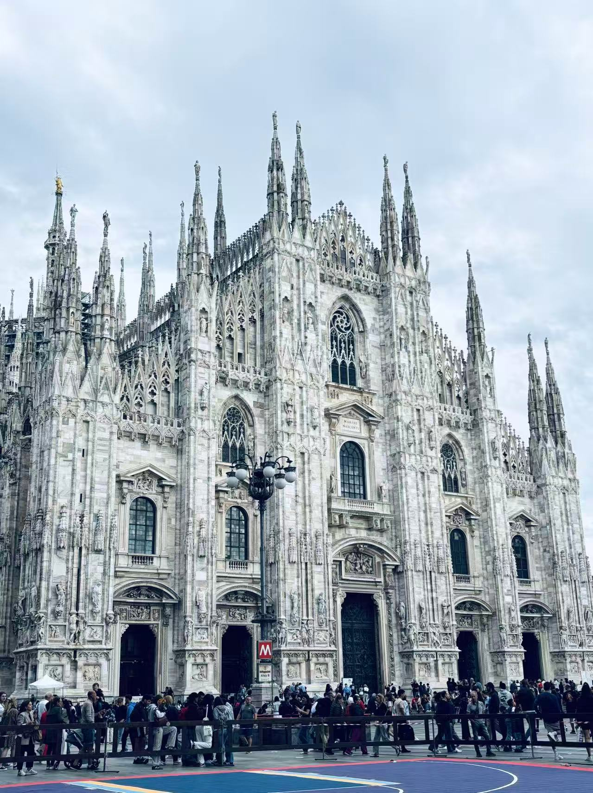

About Me
"Algorithms with empathy, robotics with purpose."
教育与成长
2024 - 至今
米兰理工大学 · 硕士
自动化与控制理论。在这里，我不仅钻研医疗机器人的强化学习，也在体验意大利特有的设计美学与咖啡文化。
2020 - 2024
华南理工大学 · 学士
机器人工程专业。完成了从机械设计、计算机编程、电子电路到控制算法的知识架构搭建，获得国家级大创项目认可。
Hobbies
📸
摄影
捕捉城市建筑的几何美感
☕
咖啡鉴赏
在米兰寻找最棒的 Espresso
🎹
古典乐
巴赫的理性与肖邦的浪漫
Travel Footprints
米兰
现在的居住地。在 Duomo 的光影下感受历史与现代设计的交织。

设计之都
意式生活
实践与创新
算法驱动的工程实践
我不只是在实验室写代码。我享受从设计 3D 打印磁耦合器物理模型，到构建闭环控制系统的整个“创造过程”。
跨学科协作能力
95%